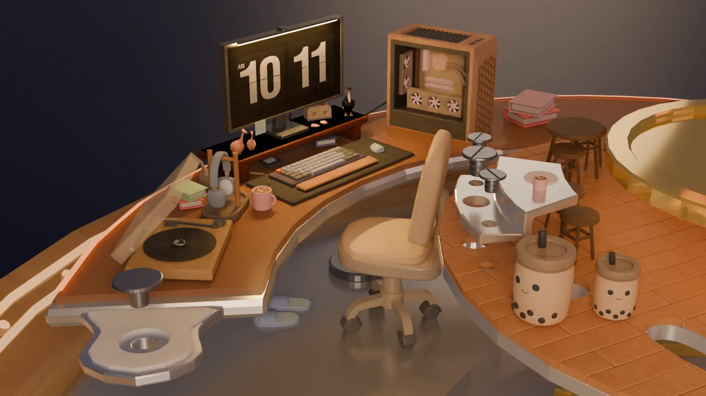
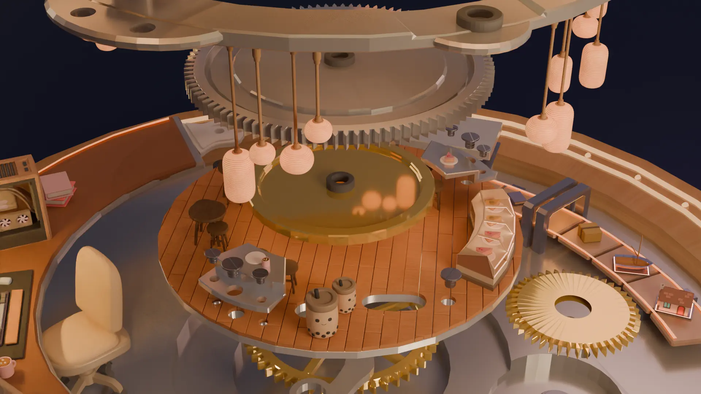
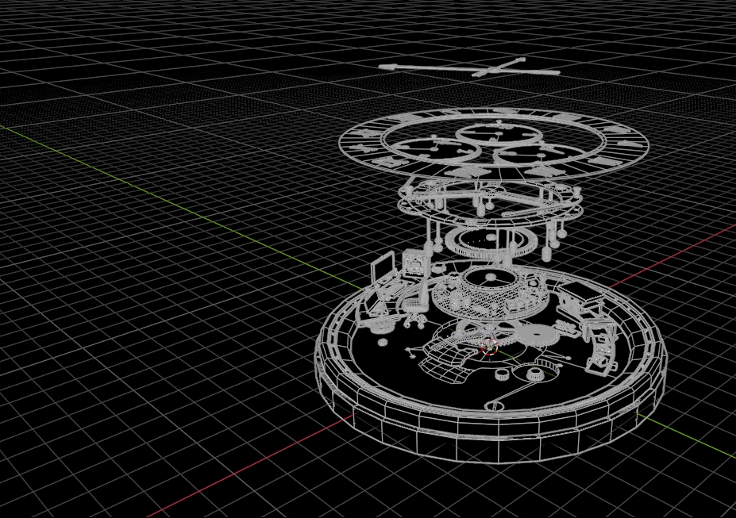
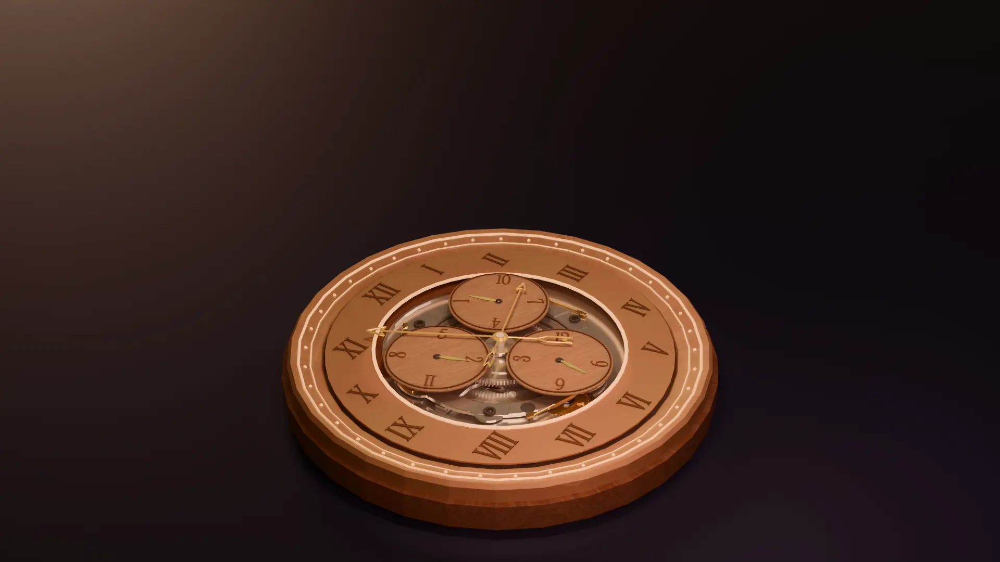
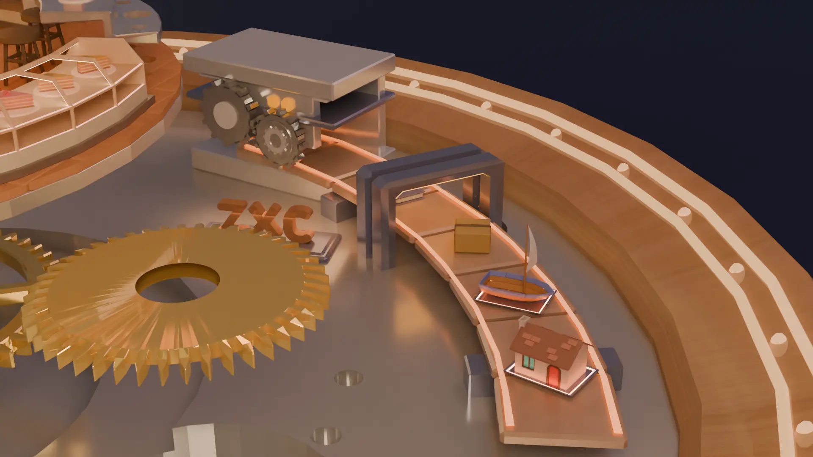

Exploded Watch
7 April 2025
Scroll down to see the rest of the collage and the final render.
Elements



- Hard-surface modelling
- Prop and asset creation
- Lighting
- Developing concepts from sketches and references
- Scene organisation
- Animation
- UV mapping
- Texture baking
- Rendering
- Compositing and post-production
Juxtaposing the intricate rhythm of a watch's mechanical movements with the warmth and vitality of everyday life.

